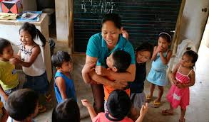
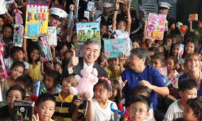
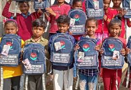
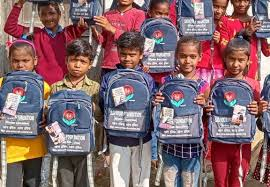

What is poverty?
Poverty is the state of one who lacks a usual or socially acceptable amount of money or material possessions.
Poverty is said to exist when people lack the means to satisfy their basic needs. In this context, the identification
of poor people first requires a determination of what constitutes basic needs. These may be defined as narrowly as
“those necessary for survival” or as broadly as “those reflecting the prevailing standard of living in the community.”
Why is poverty an issue in the Philippines?
Poverty is a significant problem because it involves a lack of resources necessary to meet basic needs, such as food,
shelter, and clothing. This deficiency can lead to adverse effects on individuals and society, including poor health,
low educational attainment, and increased social instability. Historically, poverty was often seen as inevitable due to
limited economic output. However, industrialization has increased productivity, making it possible to raise living
standards if resources are redistributed effectively.
Government policies play a crucial role in addressing poverty. They can influence income distribution through taxation
and social welfare programs. For example, higher taxes on luxury goods may disproportionately affect the wealthy, while
increased social benefits can support the poor. The debate continues on the extent to which governments should redistribute
wealth, balancing the need to alleviate poverty with potential impacts on economic behavior and productivity.
Redistribution policies aim to increase overall social welfare by ensuring that resources are allocated to those in need,
thus reducing severe hardship and improving living standards. These policies can also address market failures, such as
providing support to families during periods of high expenditure or aiding regions and industries in decline.
How to help?


 

You can choose to play a role in alleviating poverty in the Philippines. And there are so many ways to help, from donating, to fundraising,
and to volunteering. By working together, we can collectively make a difference in the lives of those affected by poverty in the Philippines.
Other ways also include: increase access to education, improve food and nutrition security, increase access to clean water, sanitation, and
hygiene services, provide quality and affordable healthcare for all, and give people cash.